Nerf Rider CS-35
Revue de Projet CAO
Rétro-modélisation complète d'un pistolet NERF Rider CS-35 sous CATIA V5, réalisée en binôme avec Damien Guichon dans le cadre de l'UV TN20 à l'UTC.

Rétro-modélisation complète d'un pistolet NERF Rider CS-35 sous CATIA V5, réalisée en binôme avec Damien Guichon dans le cadre de l'UV TN20 à l'UTC.
Durant le semestre P24 à l'Université de Technologie de Compiègne, notre binôme — Damien Guichon et Clément Balcon — a eu l'opportunité de rétro-modéliser un pistolet NERF dans le cadre de l'UV TN20.
L'objet choisi est le Nerf Rider CS-35, légèrement modifié par rapport à son modèle d'origine : la crosse arrière a été retirée et une lunette de visée a été ajoutée.
Le projet visait à appliquer la méthodologie squelette pour une modélisation collaborative, en se répartissant les différentes pièces tout en conservant une cohérence d'ensemble.
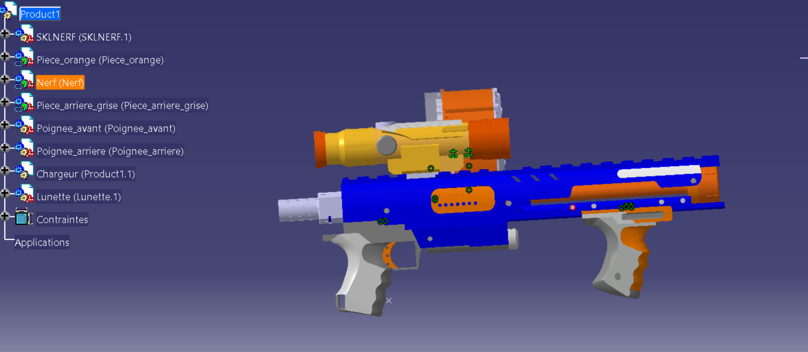
Avant de commencer la modélisation, la méthodologie squelette nous a été enseignée. Cette approche consiste à créer d'abord une structure de base — un "squelette" — avant de détailler les éléments spécifiques.
La méthodologie squelette est particulièrement utile pour les projets complexes et collaboratifs : elle fournit une base commune permettant à chaque membre de l'équipe de travailler simultanément sur des parties distinctes sans créer d'incohérences géométriques.
Elle nous a permis de nous répartir le travail et d'avancer en parallèle sur les différentes pièces, puis d'assembler le tout sur le squelette central. Cependant, son application a nécessité une adaptation constante — certains contacts entre pièces n'avaient pas été anticipés et ont dû être réintégrés au fur et à mesure.
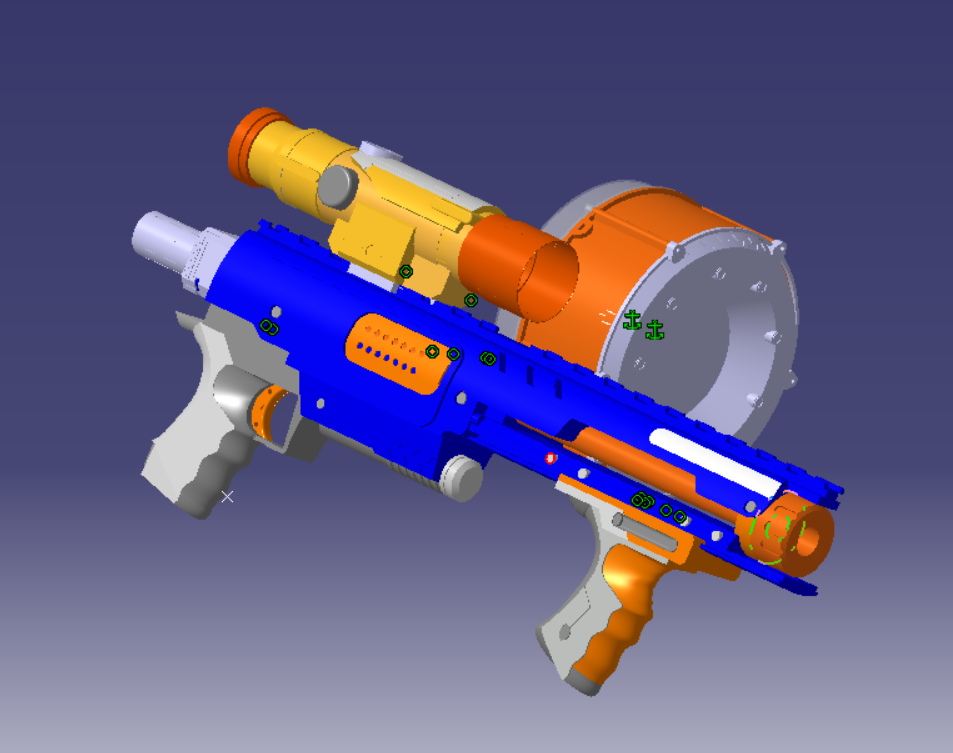
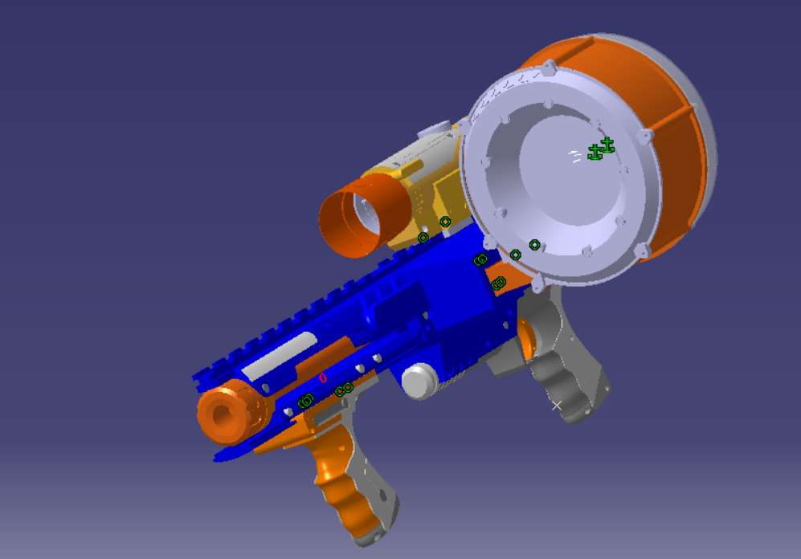
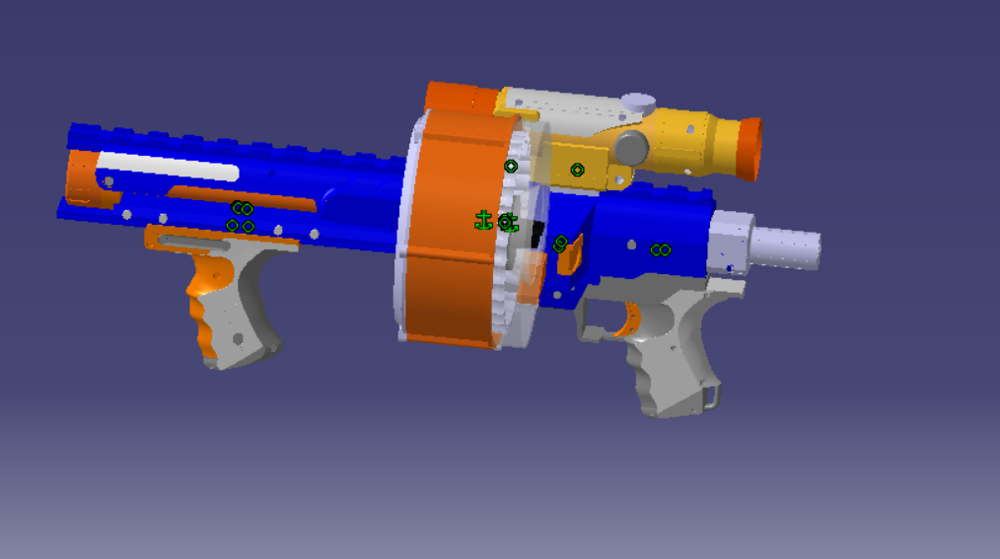
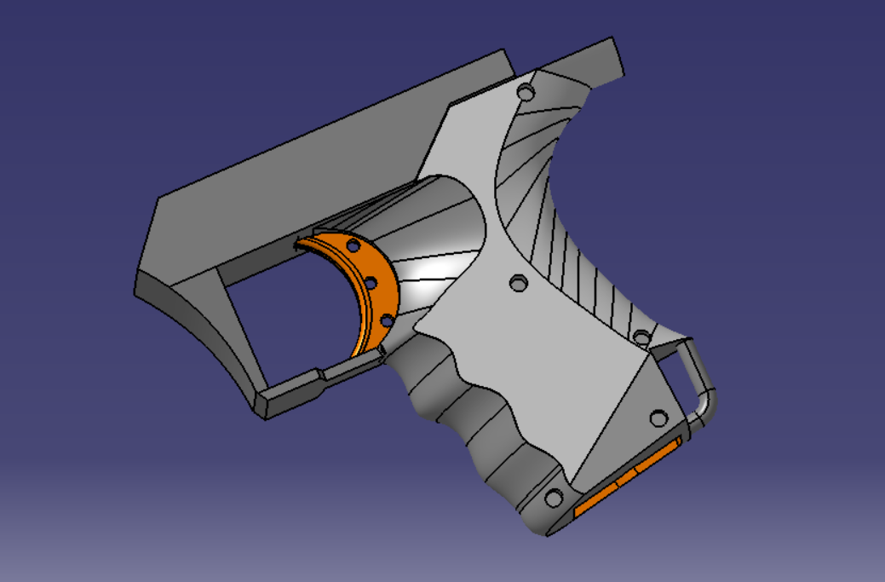
La modélisation surfacique des poignées a constitué l'une des principales difficultés du projet. Les formes organiques et les raccordements complexes ont nécessité la création d'un grand nombre de courbes guides et de points de contrôle dont le positionnement n'était pas toujours évident.
Pour faire face à cette difficulté, nous avons utilisé un croquis intermédiaire servant de référence géométrique afin de guider la construction des surfaces et d'assurer la continuité de courbure.
La modélisation surfacique impose une rigueur dans l'ordre de création des entités — une courbe guide mal positionnée peut invalider l'ensemble du réseau de surfaces.
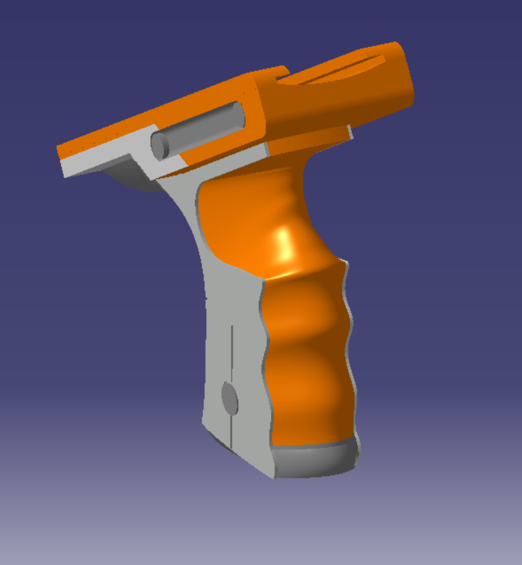
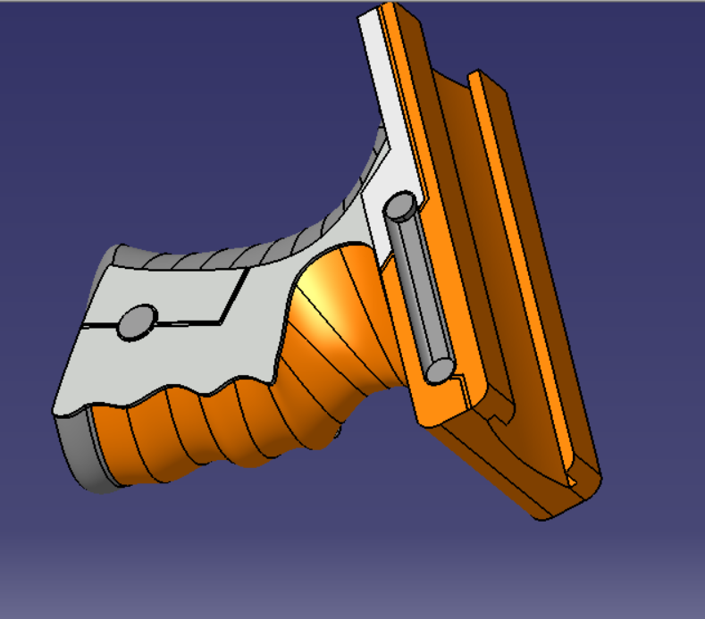
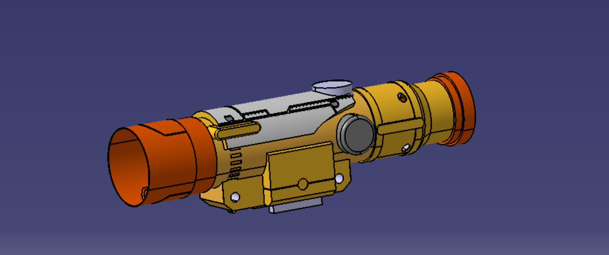
La lunette de visée ajoutée sur le Nerf modifié représentait également un défi notable : elle comporte de nombreux petits corps devant être intégrés via des opérations booléennes successives.
La réalisation des rainures complexes sur la surface grise épaisse a nécessité un processus multi-étapes :
Le chargeur circulaire a été traité comme un sous-ensemble indépendant en raison de sa complexité : il est composé de quatre pièces distinctes, dont le tambour rotatif. Nous avons donc décidé de lui créer son propre squelette afin de faciliter et d'organiser sa conception.
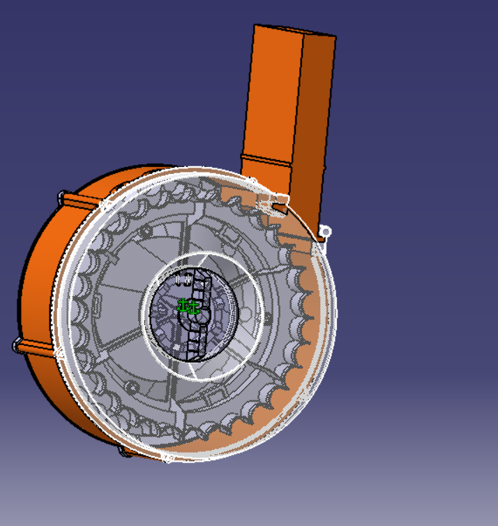
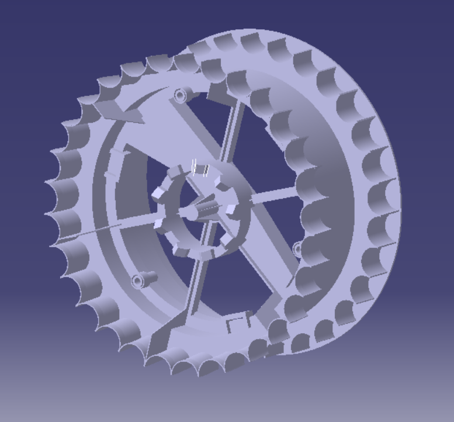
Le corps bleu principal du Nerf concentre l'essentiel de la modélisation volumique du projet. Sa géométrie générale est plus accessible que les pièces détaillées, mais certains détails de surface ont posé des difficultés spécifiques.
La réalisation d'une "poche surfacique" — n'étant pas une opération native dans CATIA V5 — a demandé une approche détournée :
Création d'un corps + esquisse → extrusion → extrapolation de la surface bleue → découpe → extrusion de la découpe → opération booléenne de soustraction, puis addition pour la partie orange.
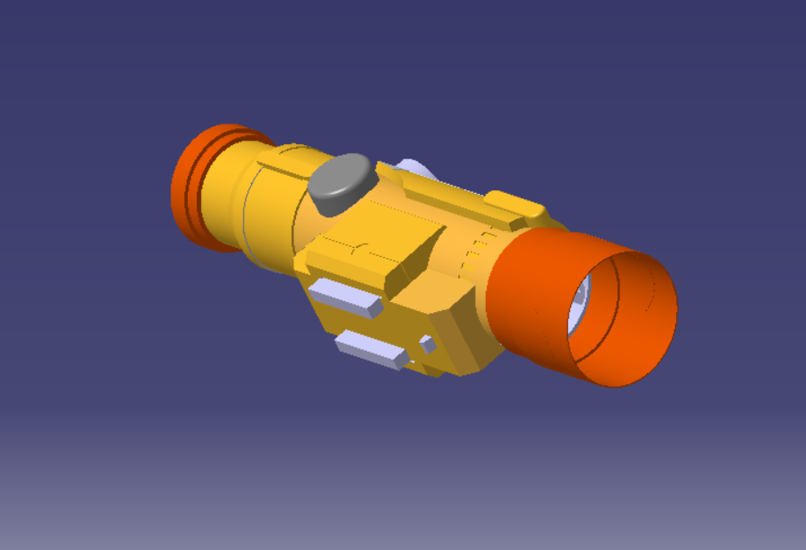
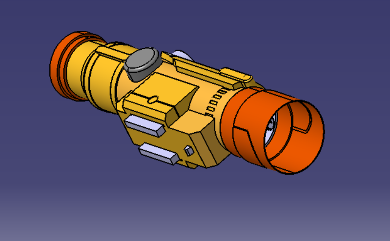
Pour assurer la précision dimensionnelle de l'ensemble, nous avons emprunté un pied à coulisse pour relever les cotes réelles du Nerf — ce qui a permis d'obtenir un rendu fidèle à l'objet physique.
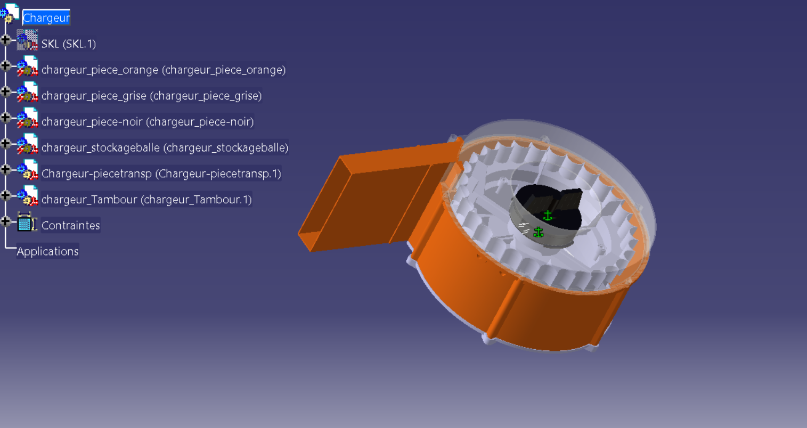
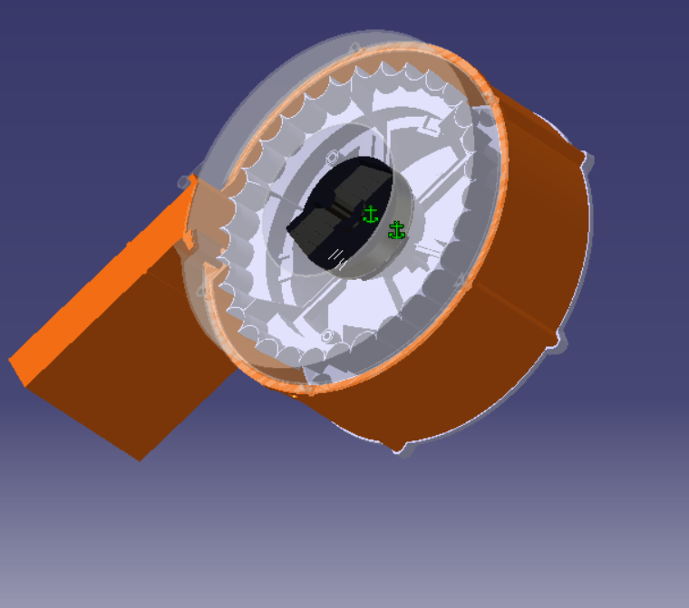
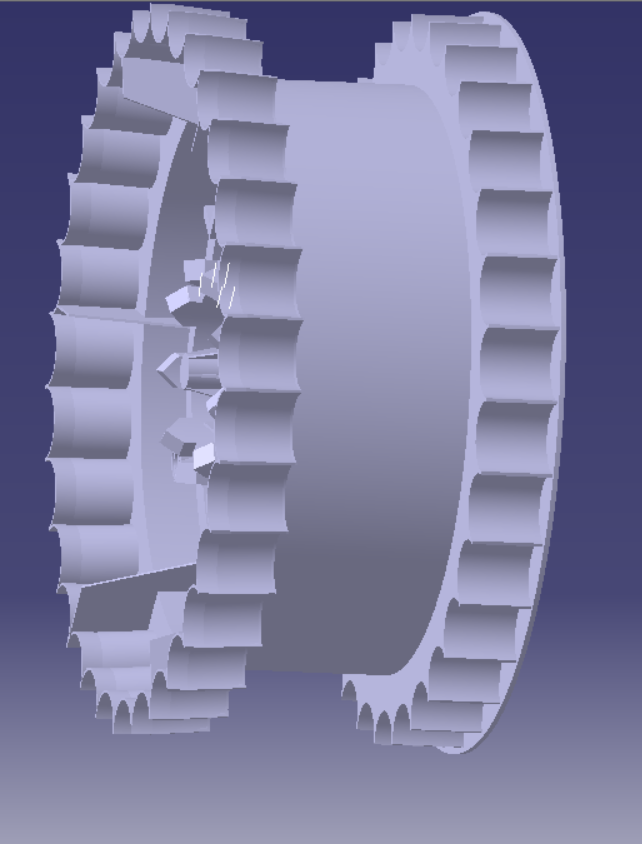
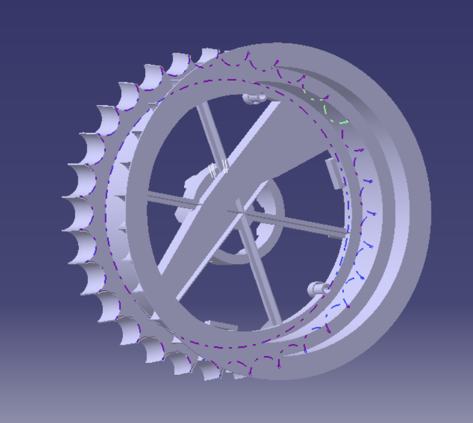
Ce projet TN20 a été riche en apprentissages techniques et méthodologiques. La comparaison entre CATIA V5 et CREO Parametric — que nous avions utilisé auparavant — a révélé que CATIA V5 présente moins de bugs d'assemblage, facilitant grandement le travail collaboratif. En revanche, sa documentation en ligne est parfois insuffisante pour débloquer certains problèmes spécifiques.
TN20 nous a permis d'acquérir une maîtrise avancée de CATIA V5 et des logiciels de CAO en général, tout en forgeant une véritable cohésion d'équipe et en démontrant la valeur du travail collaboratif structuré autour d'une méthodologie partagée.